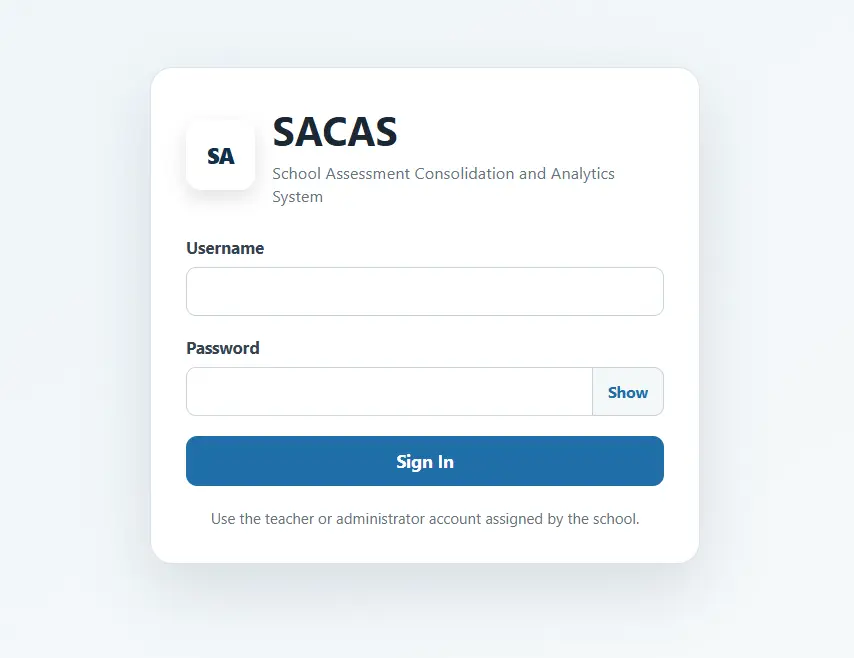

SACAS / Agayayan Analytics
A school assessment consolidation and analytics system created for a client to bring assessment information into one dedicated workspace.
- Assessment data consolidation
- School-focused analytics workspace
- Authorized teacher and administrator access